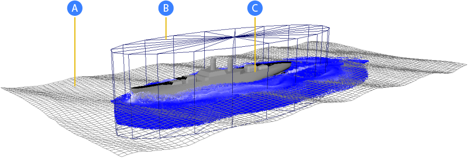

可以使用变形平面或其他平面网格引导 Bifrost 液体曲面模拟，同时将模拟限制在一个或多个特定区域。这对于诸如海洋上的船这样的镜头很有用，此时必须渲染一大片水域，即使只有部分水域需要飞溅和其他模拟效果也是如此。
导向模拟的元素

- A.导向网格
-
导向网格定义液体曲面，其顶点位置的动画提供了引导模拟的速度输入。通过控制网格的变形，您可以富有艺术地定向曲面波浪。
如果导向网格有一个名为 bifrostVelocity 的颜色集，则颜色集将用作引导速度输入，而不是已设置动画的顶点位置。特别地，如果网格的拓扑改变（使用缓存几何体时可能会出现这种情况），则网格必须具有 bifrostVelocity 颜色集，因为当一个帧的顶点与下一个帧的顶点之间没有对应关系时，无法从顶点位置计算速度。RGB 颜色通道对应于世界空间 XYZ 速度分量（以 m/s 为单位），假定场景已按 Maya 中 1 cm 为 Bifrost 中 1 m 的比例建模。
为了获得最佳结果，速度应具有水平分量和垂直分量。此外，导向网格中的波浪应该以与实际波浪没有太大区别的方式移动。如果波浪过快、过慢或过大，则模拟可能会产生瑕疵或其他意外结果。
在典型工作流中，您还可以使用网格来渲染液体曲面的非模拟区域，然后在合成期间融合模拟和非模拟渲染。
以网格为导向的替代方法是，可以使用低分辨率模拟来引导高分辨率模拟（请参见使用低分辨率模拟引导 Bifrost 液体）。
- B.发射区域
-
发射区域定义发射液体的体积。以这种方式限制发射可节省内存和计算时间。
如图所示使用单独网格定义发射区域的替代方法是，您可以使用作为碰撞对象的相同网格，并指定其周围发射区域的厚度。
发射区域既可以设置动画，又可以变形。随着区域移动，新粒子在以前空白的区域中播种，区域外的粒子会在您可以设置的时间间隔后消亡。
发射区域不应水平延伸到导向网格之外。
- C.碰撞对象
-
液体与诸如船和岩石等碰撞对象相互作用，从而产生飞溅、尾迹和弓形波等效果。
使用网格引导模拟
- 如果未选定任何内容，请选择。这会将液体模拟添加到场景中，但不存在粒子，因为尚未定义发射器。
- 选择导向网格，以及主模拟容器（例如 bifrostLiquid）或形状（例如“液体”(liquid)），然后选择。
选定网格将作为具有网格特性（例如
guideMeshProps）的导向连接到模拟。此外，会在主导向特性（例如
bifrostGuideProperties）中自动启用以下属性：
- “导向模拟”(Guided Simulation)组中的“启用”(Enable)。
- “输入”(Input)子组中的“网格”(Mesh)。
- 选择一个或多个网格作为碰撞对象，以及主模拟容器或形状，然后选择。有关详细信息，请参见使用 Bifrost 碰撞对象。
如果需要，重复上述步骤以添加更多碰撞对象。
- 执行下列操作之一：
- 创建一个或多个网格，以定义发射区域的体积。确保它们在导向下方至少延伸到要模拟的深度，并且它们还包含足够的空间以便在导向上方飞溅。选择网格以及主模拟容器或形状，然后选择。隐藏网格，或使它们不可渲染。
- 选择一个或多个碰撞对象网格以及主模拟容器或形状，然后选择。在 emissionregionProps 节点的“转换”(Conversion)属性中，将“厚度”(Thickness)设置为正值，以定义网格周围的发射带（因为在碰撞对象内不会发射粒子）。
如果需要，重复上述步骤以添加更多发射区域。每组网格将连接到具有单独发射区域特性的模拟。若要使用现有特性连接一个或多个网格，请选择网格和特性节点（而不是模拟容器或形状），然后选择。
-
一旦存在至少一个发射区域，您应该在模拟的第一帧上的发射区域内的导向曲面下方看到一段液体，并且您可以根据需要调整设置。特别是：
- 主导向特性中的“最小模拟深度”(Min Simulation Depth)控制世界空间中的液体深度，并且可能需要根据为场景建模的情况和比例进行调整。例如，要创建船尾迹，液体应延伸到船体底部以下，至少有一些空余空间，并且较长或较快的船可能需要更多的深度。
- 如果需要无深度的曲面飞溅，可以将“最小模拟深度”(Min Simulation Depth)设置为 0.0，然后使用“曲面层”(Surface Layer)控制曲面顶部一段薄液的高度。您也可以对这两个属性使用非零值，以使液体位于导向网格的上方和下方。
- 使用导向网格特性中的“与导向融合”(Blend with Guide)，可控制从发射区域中心的模拟速度融合到发射区域边界的输入导向速度。这有助于在模拟和导向网格之间实现平滑过渡。
- 要控制粒子在离开发射区域后存活的秒数，请在发射区域特性的“发射”(Emission)属性中设置“消亡年龄”(Death Age)。
- 通常，为获得最佳效果，请确保所有粒子密度设置相等。这包括全局导向特性的“粒子重新设定种子”(Particle Reseed)组中的“粒子密度”(Particle Density)，以及液体特性的“发射”(Emission)组中的“内部粒子密度”(Interior Particle Density)和“曲面粒子密度”(Surface Particle Density)。
有关详细信息，请参见 Bifrost guideProperties 属性和 EmissionRegionProps 属性。
- 进行播放，并在必要时进一步调整设置（请参见调整 Bifrost 导向模拟）。首先使用低分辨率（高“主体素大小”(Master Voxel Size)），然后在满意其工作后增大分辨率。